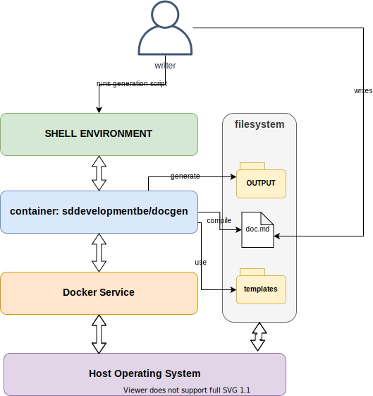

DocGen Project User Guide¶
Table of Contents:
Background Information¶
The DocGen project is meant as a way to simplify the installation and usage of FOSS plain text document layouting systems. The main advantages of using a plain text format to write and maintain your documentation files are:
Avoiding cross-vendor incompatibilities: converting documents from one format to another is a tedious task. This is even more the case when the file format of your documentation is a proprietary format.
Versionable documentation: plain text files allow you to make use of most CVS systems. This allows you to choose whatever CVS suits you best, and allows you to use your favorite versioning tooling.
No special tooling needed: while writing plain-text document syntax is significantly simplified by using a text-editor with syntax support for layouting languages, they are not required. A simple editor such as
nano,viornotepadis sufficient.
Project Structure¶
Most of the DocGen Project is a simple aggregation of various Free and Open Source Software projects. The main issue when relying on an eclectic stack to generate documents is that you need to install and configure all components on every machine you wish to use it.
DocGen aims to solve this by providing users with an easier way to do this set-up. Installation and usage of this repository (stand-alone or as a supporting stack for your other repositories) should be limited to three distinct installation operations:
Install the container framework (Docker)
Clone the repository
Run the conversion scripts
The diagram below shows how the DocGen stack operates on your personal machine or server infrastructure.

System Requirements¶
Docker version 19+
Sufficient RAM (4 GB and higher)
Sufficient free memory space ( recommended 10 GB or more for docker images )
Getting Started with SDD DocGen¶
Before attempting to use the project for yourself, try to build the samples included in this repository first. This will give you a good idea of how the project is intended to be used, and how you can extend or adapt it to your own needs.
Run conversion¶
Start the docker-compose containers and execute the commands showed below. You can edit the scripts in ops/scripts/, or add your own.
docker-compose -f ./ops/docker-compose.yml up -d --remove-orphans
docker-compose -f ./ops/docker-compose.yml exec linux sh /root/docGen/scripts/doc_runner.sh documents/document_sample.md document sdd-base
Alternativly, you can use the convert_documents.sh script included in this repository’s root
to run all the examples. The result of these can be found in your local ./output directory.
Specific Tasks and Goals¶
INFO: This section is a STUB and will be expanded in the future